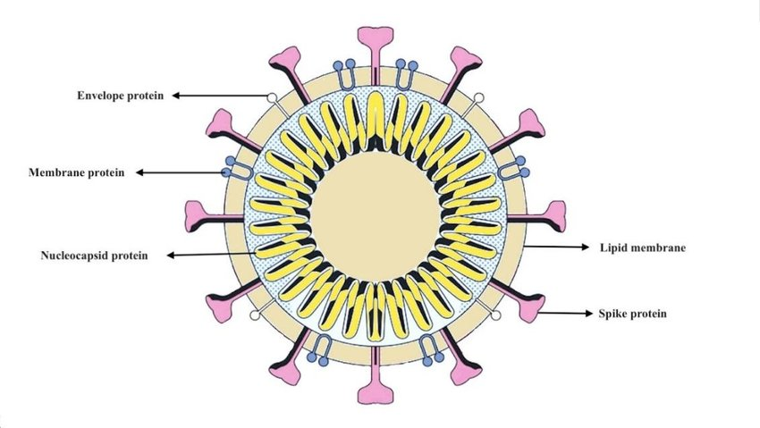

Table of Contents
Covid-19 is the name of a disease from a coronavirus(SARS-CoV-2) that emerged in China in December 2019.
Symptoms range from mild to severe. These include: cough, fever or chills, shortness of breath or difficulty breathing, muscle or body aches, sore throat, new loss of taste or smell, diarrhea, headache, new fatigue, nausea or vomiting and congestion or runny nose. Symptoms may appear 2 to 14 days after exposure the virus.
If any of these signs appear, seek emergency medical care immediately:The virus is mainly spread through the air from an infected individual's breath, cough, sneeze, or speaking entering another individual's mouth, nose, or eyes. It may also spread from contaminated surfaces. Individuals are typically infectious for around two weeks.
Factors that reduce the spread include wearing face masks, hand washing, ventilation, disinfecting surfaces, and self-isolation.
Consider getting tested if you have any of the symptoms or have been in contact with someone with Covid-19 or in high risk activities like large gatherings/travel/indoor crowds.
source: who.int
Evidence supports that masks protect the individual wearing them and those around them. Other than neck gaiters/backlavas*, even the most basic coverings seem to more effective that not wearing anything. According to the CDC, those two years and older should wear masks in public settins and when around people outside of the household. Additionally, masks should also be worn when caring for someone sick with Covid-19.
The most protective masks are N95 and its equivalents(P2, KN95, KF94) which filter out large and small particles(>95% of small particles). Surgical and cloth masks are also protective and effective in filtering out large particles. The CDC recommends the public wear cloths masks made of 2+ layers of tightly woven cloth seen here.
* A recent found that neck gaiters made out of synthetic fibers may do more harm than good
Mask Selection Guide
- Has 2+ layers of breathable fabric (bonus if washable!)
- Completely covers nose, mouth, and chin
- Fits snuggly with no gaps
- No exhalation valves or vents
Mask Wearing Guide
Step 1. Wash you hands
Step 2. Put on the mask touching only the bands or ties
Step 3. Fit the mask over your nose bridge covering your nose, mouth, and chin
Step 4. Keep it on!
Don't forget comfort! Adjust as needed, but remember to keep hand hygiene before and after.
Mask Effectiveness Chart
source: hopkinsmedicine.org, cdc.gov, healthgrades.com, usatoday.com
Handwashing is an effective method to protect yourself against Covid-19 and other diseases. Through your hands alone, you can spread germs to yourself and others by touching contaminated surfaces and then touching your eyes/nose/mouth and other surfaces. Washing your hands frequently is important, but it is especially important before eating, after eating, coughing, sneezing, blowing your nose, and bathroom use. Washing your hands using soap and water for 20+ seconds is the most effective way to get rid of germs off our hands.
In the case of Covid-19, the molecules in soap disrupts the lipid membrane of the virus so that virus particle collapses and is no longer infectious. If washing your hands in not an option, using hand sanitizer is a good alternative. Hand sanitizers are not as effective if your hands are soiled or greasy. After applying hand sanitizer, rub your hands like when washing with soap and water for 20 seconds. Hand sanitizer should be around 60-95% alcohol to be effective.
source: cdc.gov, debgroup.com
Coronavirus on surfaces naturally die within hours to days. Cleaning dirty surfaces reduces debris and germs including SARS-CoV-2. Disinfecting then kills the remaining germs further reducing the risk of spread Covid-19. To get an idea of how long SARS-CoV-2 last on different surface we can see the results of this study:
Disinfectants
While contamination from surfaces are not a major source of infection, if needed the best household cleaners are confirmed virucidal disinfectants such as 0.05% sodium hypochlorite solution(bleach) or >70% ethanol solution. To use a disinfectant, safety is paramount and the use of gloves/goggles/ventilation is often recommended.
Find more from an official list here.
Use chemical disinfectants safely!
EPA's 6 Steps for Safe and Effective Disinfectant Use
1. Check that your product is EPA-approved
2. Read the directions
3. Pre-clean the surface if it is visibly dirty
4. Follow the contact time
5. Wear gloves and wash your hands
6. Lock it up. Keep cleaners out of reach from children
source: epa.gov, cdc.gov
If you are sick with Covid-19 or suspect you might have it, stay at home to reduce spread to others in your community. Inform those who have had contact with you recently that they may have been exposed to the virus.
Emergency Warning Signs
If any of these signs appear, seek emergency medical care immediately:source: cdc.gov, uchicagomedicine.org
Aside from affecting physical health, Covid-19 has also increased economic and mental burdens on many individuals, increasing stress levels. Mental health is an often neglected factor when facing a public health crisis, but it too is an important part in you body's health. If you find yourself frequently stressed, upset, or worried, consider seeking resources that can help you cope. Here are some tips from the CDC to cope with stress.
- Know what to do if you're sick and where/how to get treatment
- Educate yourself about the virus
- Take care of your emotional health
- Take breaks from keeping up with news and social media
- Take care of your body (deep breaths/stretching/meditation)
- Connect with others and maintain relationships
- Healthy diet and excersie
source: cdc.gov
Viruses are microsopic infectious agents that with the ability to multiply within the living cells of a host. Their size range from 20-400 nanometers(too small to be seen by a light microscope) and come in all different shapes (rods, spherical, polyhedral, etc.). Simply, they are DNA or RNA (genetic material) wrapped with a protein and or lipid shell. Virus need living cells in order to reproduce. To do so they latch on to living cells and insert genetic material which takes over the cell and makes it create more viruses. This ends up with the cell releasing thousands of viruses which continue this cycle. This process is how a virus spreads through the body.

Those who are infected with viruses can generally only treat their symptoms, although antiviral medications exist for some viruses (such as herpes and hepatitis). Getting vaccines can help prevent you from contracting certain viruses.
source: https://www.nationalgeographic.org/
Vaccines help prepare the body to effectively fight off a virus in case of infection. Vaccines are typically made up of weakened/dead virus, and sometimes include other necessary ingredients such as adjuvants (boost the immune response to a vaccine; also found in antacids, aspirins, antiperspirants, and more), stabilizers (naturally found in the body, these help maintain a vaccine’s effectiveness after manufacturing), formaldehyde (used to prevent bacterial contamination; note that the body contains more formaldehyde than any vaccine), and thimerosal (this ingredient is only used in multi-dose vaccine vials, such as the flu vaccine). However, some vaccines are different, such as the vaccines currently being used for COVID-19 (Pfizer and Moderna, specifically) which are mRNA-based.
When a vaccine is introduced to the body, an immune response is prompted. The body recognizes molecules on the weakened/dead virus (called antigens), which let the body know that the vaccine is a pathogen that needs to be dealt with. The body then notifies the necessary cells needed to defend against pathogens—such as cells directed to attack the virus—and creates memory cells that remember the virus. These cells allow the body to respond more strongly and efficiently if the body is exposed to the virus in the future, which is called a secondary response. This process acts as a “practice round” for the body, so if the virus is encountered in the future, the individual should not undergo as severe of a sickness in comparison to if they had never received the vaccine.